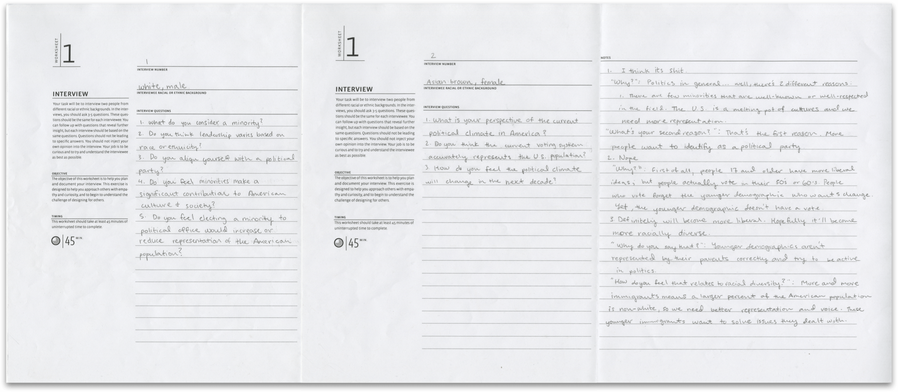
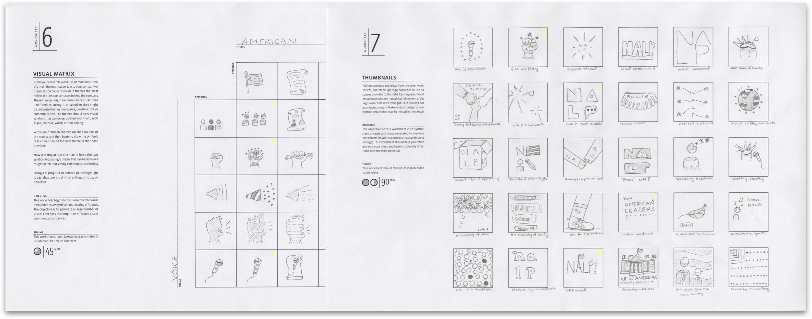
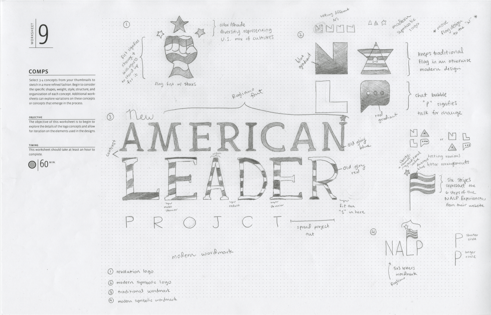
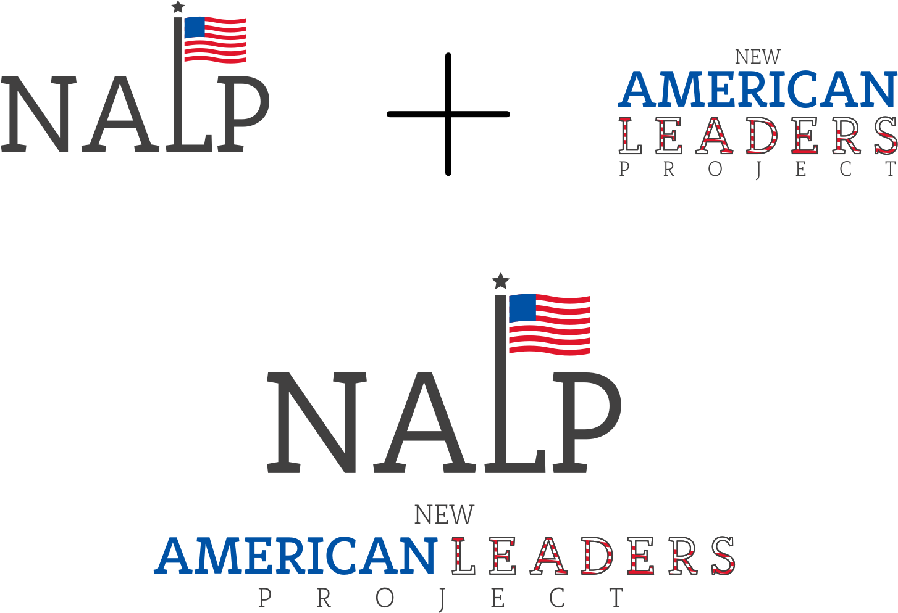

Overview
A logo emphasizing bipartisanship, modernism, and traditional values for the New American Leaders Project.
Roles
Researcher
Graphic Designer
Timeline
September 2017 to October 2017

This project was to help the New American Leaders Project reach a wider audience of minority participants in the program, businesses for sponsorship and funding, and a national population of voters and supporters. This project was created as part of my first graphic design course.
The most immediate action in this project was to study the opinions of minority candidates from the opposite ends of the political spectrum. I chose two students at the University of North Texas with two completely different backgrounds.  After my interviews, both candidates’ answers had nearly zero similarities. Thus, I decided that the logo should be as neutral as possible while still representing the values of the organization.
After my interviews, I needed to contextualize the space in which the logo would reside. That meant completing a competitive audit where I mapped out various organizations that would be competing with NALP for their prime audience.
Bubble maps, word lists, visual matrices, and thumbnailing all helped me to combine ideas and generate a variety of images that I could use to narrow my thought process. This was the easiest part of the process for me because of my background in creating icons. 
I had never paid much attention to text besides whatever new font Apple used that year - before this project. Creating a logo that would be seen by millions, possibly altered, or used as a symbol taught me that glyphs were more than just a language. I tried out three fonts, focusing on modern, serif fonts that provided a combination of traditional and futuristic vibes.

Drawing was not a strength of mine, but using this opportunity to practice, I learned how much it helps to visualize certain concepts and stimulate ideas for a high-fidelity prototype or final product. 
I eventually chose two logos to test at various scales. Deciding that each had its pros and cons at different sizings, I combined both into a cohesive logo for my final submission. 
Through a variety of worksheets, I adopted a creative process that helped me to organize my project rather than jumping into computer-generated design. The NALP logo was a culmination of research, textual and visual ideation, font and color exploration, and a refined final product. I learned how to make my designs unique without sacrificing the client’s objectives.